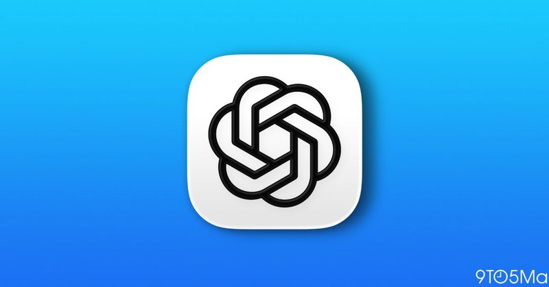
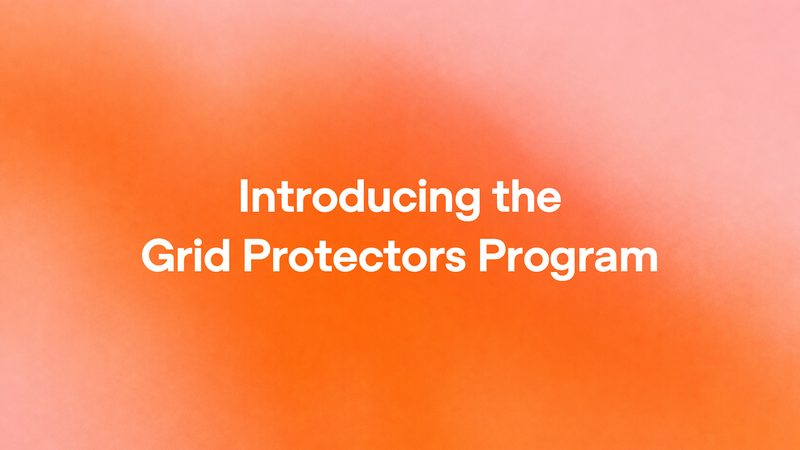
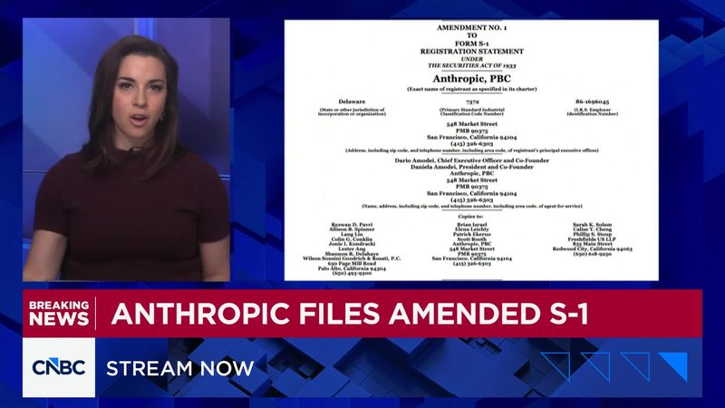
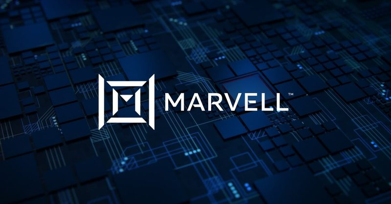
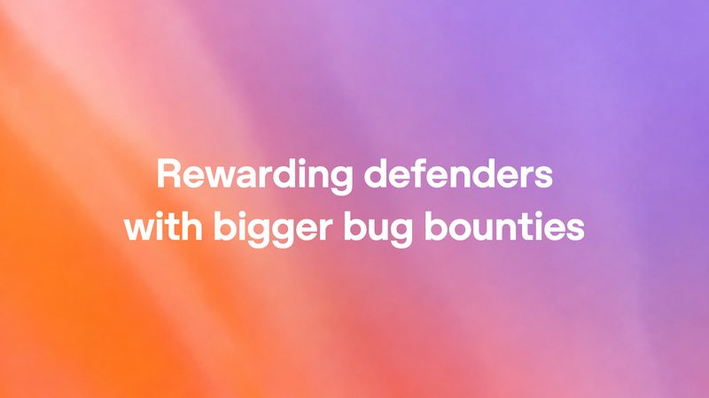

今日頭條
ChatGPT 對話與工作分頁將合併
PLUS：紐時控告 Brave 抓新聞賣給 AI 公司
本期重點：OpenAI 通知用戶將測試把 ChatGPT 的「對話」和「工作」合成一個畫面，舊版 ChatGPT Classic 桌面 App 定在 2027 年 1 月 30 日退役；《紐約時報》等報社告 Brave 瀏覽器抓新聞賣給 AI 公司。另有 OpenAI 資料中心用電新計畫、Anthropic 更新上市文件與 Marvell 千億美元併購。

圖：9to5Mac新聞#1ChatGPT「對話」與「工作」分頁將合併，舊版桌面 App 明年 1 月底退役
9to5Mac 11 月 2 日報導，OpenAI 寄信通知用戶，接下來幾週會先找一小群人測試把 Chat（對話）和 Work（工作）合成同一個畫面，可以直接帶檔案、外掛，請 ChatGPT 做網站、簡報或上網代辦；Codex 仍會是桌面 App 裡獨立的區塊。同時，舊版 ChatGPT Classic 桌面 App 開啟時出現公告，將在 2027 年 1 月 30 日退役。
💡 跟你有什麼關係：現在桌面版要在 ChatGPT、Work、Codex 之間切換，常搞不清楚專案放在哪；合併後聊天聊到一半就能直接請它動手做。還在用 Classic 的人，需要在退役前改裝新版 App，官方說完整對話紀錄會跟著轉過去。
⚠️ 合併版目前只對少數人測試，沒有公布全面上線日期；OpenAI 的 Thibault Sottiaux 在 X 上表示「還沒有開始推出」（The Verge 引述）。ChatGPT 與 Codex 共用一份額度的消息已在 11/2 期報導，這次的新進展是分頁合併與 Classic 退役日期。
📰 原始來源：9to5Mac（2026-11-02） ↗圖：The Verge／NurPhoto via Getty Images政策#2紐時等報社控告 Brave：抓新聞賣給 AI 公司，還幫人繞過付費牆
《紐約時報》11 月 2 日控告 Brave 瀏覽器的開發公司 Brave Software；同一天《紐約每日新聞》《芝加哥論壇報》《奧蘭多前哨報》也提出類似訴訟。起訴書指控 Brave 把爬取的網頁做成索引，付費提供給 Anthropic、Perplexity、Mistral、xAI、Cohere 等 AI 公司，瀏覽器內建的「Paywall blocker」功能也讓用戶繞過報社付費牆。
💡 跟你有什麼關係：你在 AI 聊天機器人裡看到的新聞摘要，背後可能來自這類搜尋索引；訴訟結果會影響 AI 公司以後怎麼取得新聞內容，也可能影響瀏覽器能不能提供繞過付費牆這類功能。
⚠️ 目前都是報社單方面的指控，尚未經法院認定；The Verge 報導時 Brave 尚未回應，Perplexity 發言人則反駁訴狀內容。
📰 原始來源：The Verge（2026-11-02） ↗
圖：OpenAI新聞#3OpenAI 推「電網守護者」計畫：用電吃緊時，資料中心先減少用電
OpenAI 11 月 2 日宣布 Grid Protectors Program，未來的運算園區要和電力公司約定，在寒流、熱浪等用電高峰時降低用電。第一個試點是喬治亞州 Effingham County 規劃中的園區，與 Georgia Power 的協議包含最多 1,000 MW 的彈性減載，官方換算約等於 70 萬戶家庭的平均用電量，OpenAI 也承諾負擔供電所需的全部基礎建設與電力服務費用。
💡 跟你有什麼關係：AI 資料中心越蓋越多，各地居民最擔心的是電費變貴、尖峰缺電。Georgia Power 估計，靠大型用電戶協議組合與用電成長，從 2029 年起每年可替用戶省約 9.5 億美元，一般住戶每月至少省 15 美元。
⚠️ 園區仍在開發中，減載能力還沒實際運作；省電費的數字是 Georgia Power 針對整體大型用電戶協議的預估，不是單看 OpenAI 一家。
📰 原始來源：OpenAI（2026-11-02） ↗
圖：CNBC資金#4Anthropic 更新上市文件：第三季營收約 170 億美元，淨損 232.9 億
Anthropic 11 月 2 日向美國證管會提交修正版 S-1，補上第三季財報：截至 9 月 30 日的前九個月營收 332.4 億美元，比去年同期成長約 1,200%；第三季營收約 170 億美元，季增約 47%，明顯低於第二季的 144%。第三季淨損 232.9 億美元，文件也揭露已簽下約 8,954 億美元的合約承諾，幾乎都是算力與基礎設施。
💡 跟你有什麼關係：Claude 背後的公司正準備上市，這些數字是外界判斷 AI 公司能不能長期賺錢的重要依據；算力支出越大，未來訂閱價格與用量限制調整的壓力也可能越大。
⚠️ CNBC 指出前九個月 1,040 億美元淨損大多來自可轉債與衍生性負債的公允價值變動，屬非現金項目。延續 10/31 期 FT 信評報導，這次是新公布的第三季數字。
📰 原始來源：CNBC（2026-11-02） ↗
圖：Marvell資金#5Marvell 全股票收購 Lumentum，企業價值 1,150 億美元
晶片公司 Marvell 與光通訊公司 Lumentum 11 月 2 日宣布合併協議：Lumentum 股東每股換 4.5 股 Marvell 股票，換算企業價值 1,150 億美元、每股約 1,132 美元，較 10 月 28 日股價溢價約 23.9%。合併後 Marvell 原股東持股約 67%，預計 2028 年上半年完成。
💡 跟你有什麼關係：AI 資料中心的資料量越來越大，銅線傳輸快到極限，業界正轉向雷射與光纖連接；這筆交易顯示「把 GPU 連起來」的零組件也成了 AI 軍備競賽的重點。
⚠️ 交易仍需雙方股東與各國監管機關核准，可能生變。
📰 原始來源：Marvell 官方新聞稿（2026-11-02） ↗圖：韓聯社 Yonhap政策#6南韓 2027 年預算 21.3 兆韓元投入 AI、晶片與資料中心
南韓總統李在明 11 月 2 日在國會發表預算演說，2027 年總支出 820.9 兆韓元（約 6,145 億美元），年增 12.8%，創紀錄。其中 21.3 兆韓元投入半導體製造聚落與資料中心、實體 AI 與 AI 推廣三大計畫，另編 4.6 兆韓元打造世界頂尖的自主 AI 模型。
💡 跟你有什麼關係：南韓靠三星、SK 海力士的 AI 晶片獲利撐起稅收，再把錢投回 AI 與晶片；作為台灣在半導體與 AI 伺服器上的主要競爭對手，這筆預算值得留意。
⚠️ 預算案仍需國會通過，法定期限是 12 月 2 日；最大在野黨國民力量黨在演說時抗議政府擴大國債。
📰 原始來源：韓聯社 Yonhap（2026-11-02） ↗
圖：OpenAI新聞#7OpenAI 調高漏洞獎金，ChatGPT 等核心產品嚴重漏洞最高 3 萬美元
OpenAI 11 月 2 日宣布調高資安漏洞獎勵：中、高、嚴重等級的獎金區間中位數平均提高到四倍以上，ChatGPT、Codex、API 平台等核心產品的嚴重漏洞最高 3 萬美元，特殊重大漏洞仍最高 10 萬美元，加上各種加成最高約 17.2 萬美元。尚未發獎金的舊回報適用新標準，公告前 30 天內已發的也會補差額。
💡 跟你有什麼關係：獎金越高，越多外部資安研究員會主動幫忙找 ChatGPT 的漏洞，例如官方舉例的「一鍵盜用帳號」或「看到別人的對話」，對一般用戶的帳號與對話隱私是加一層保障。
⚠️ 獎金高不代表產品沒有漏洞；官方表格中的金額是示意計算。
📰 原始來源：OpenAI（2026-11-02） ↗✅ 2026/11/3（二） 可以做：用 ChatGPT 桌面版的人，可以看一下自己開的是不是「ChatGPT Classic」；它 2027 年 1 月 30 日退役，官方說換到新版 App 後完整對話紀錄會一起帶過去。
🗂️ 過去 14 天